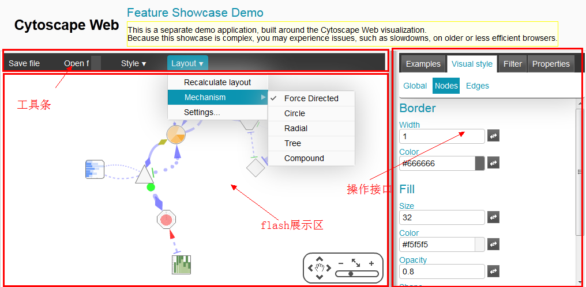
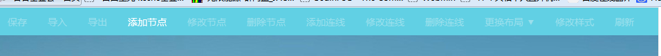
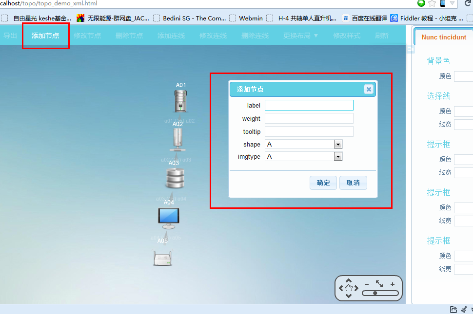
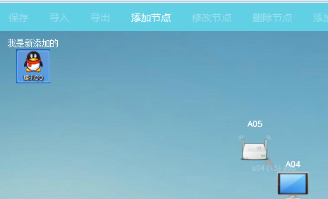
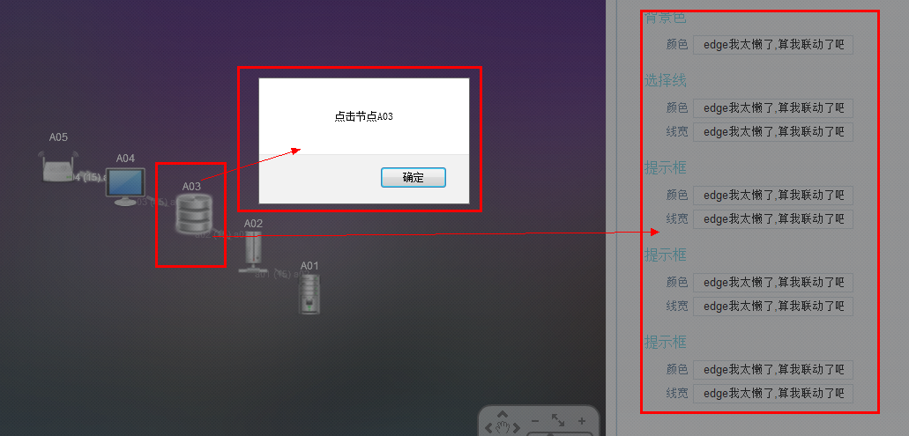
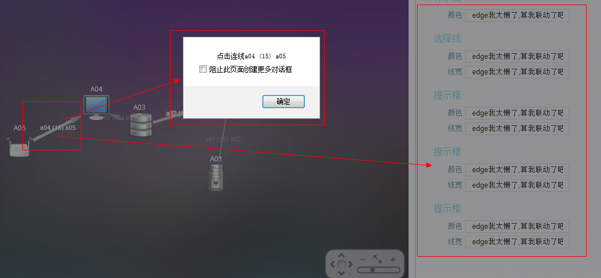

-
1整体设计
整体设计
如下图参考官网页面结构
模仿页面
UI元素说明
以下讲解均默认采用jquery语法,
UI元素均采用jquery ui进行说明,如使用其他插件的UI元素,更换相关语法即可.
http://jqueryui.com/语法示例:
<script>
$(function() {
//UI Button
$("input[type=submit], a, button").button().click(function(event){
event.preventDefault(); //取消默认事件
});
//UI Dialog (非模式,可以拖拽,不锁死屏幕)
$( "#dialog" ).dialog();
//UI Tab
$( "#tabs" ).tabs();
});
</script>
<body>
<!-- UI Button -->
<button>A button element</button>
<input type="submit" value="A submit button">
<a href="#">An anchor</a>
<!-- UI Dialog -->
<div id="dialog" title="Basic dialog">
<p>This is the default dialog which is useful for displaying information.
The dialog window can be moved, resized and closed with the 'x' icon.</p>
</div>
<!-- UI Tab -->
<div id="tabs">
<ul>
<li><a href="#tabs-1">Nunc tincidunt</a></li>
<li><a href="#tabs-2">Proin dolor</a></li>
<li><a href="#tabs-3">Aenean lacinia</a></li>
</ul>
<div id="tabs-1">
<p>Proin elit arcu, rutrum commodo, vehicula tempus, </p>
</div>
<div id="tabs-2">
<p>Morbi tincidunt, dui sit amet facilisis feugiat, odio metus gravida ante, </p>
</div>
<div id="tabs-3">
<p>Mauris eleifend est e .</p>
</div>
</div>
</body>
功能分解(1)工具条置灰效果(仅供参考)
<!-- <li>标签和<a>统一加入class="disabled" --> <li class="disabled"><a href="javascript://" class="disabled" id="menu_save">保存</a></li>
示例图片
功能分解(2)工具条联动机制
讲解:第一步:监听点击事件
第二步:弹出Dialog框,填写表单
第三步:调用Flex接口,执行操作
示例图片
以添加节点为例:
/**
*--------------------------------------工具栏--------------------------------------
*/
//保存
$("#menu_save").click(function(){});
//导入
$("#menu_import").click(function(){});
//导出
$("#menu_export").click(function(){});
//添加节点
$("#menu_add_node").click(function(){
$("#menu_add_ialog").dialog({
buttons: {
"确定": function() {
$( this ).dialog( "close" );
//添加节点代码(我太懒了,没有处理表单,原谅我吧)
var data = { id: "n_qq",
label: "我是新添加的",
imgtype: "img/node_add.png"};
var node1 = vis.addNode(50/*x坐标*/, 50/*y坐标*/, data/*数据*/, true/*是否立刻绘制*/);
},
"取消": function() {
$( this ).dialog( "close" );
}
}
});
});
//修改节点
$("#menu_edit_node").click(function(){});
//删除节点
$("#menu_del_node").click(function(){});
//添加连线
$("#menu_add_edge").click(function(){});
//修改连线
$("#menu_edit_edge").click(function(){});
//删除连线
$("#menu_del_edge").click(function(){});
//更换布局
$("#menu_layout_select").click(function(){});
//修改样式
$("#menu_style").click(function(){});
//刷新
$("#menu_refresh").click(function(){});
<div id="menu_add_ialog" title="Basic dialog">
<form></form>
</div>
示例图片:

功能分解(3)操作区的接口联动机制
讲解:第一步:监听Flex的点击事件
第二步:操作区联动或者弹出Dialog框,
第三步:调用Ajax接口,交互数据
示例页面代码:
vis.ready(function() { //vis就是topo图对象,ready就是初始化完成执行的方法
//点击节点
vis.addListener("click", "nodes", function(event) {
var node = event.target;
//node.data就是获取数据
alert("点击节点"+node.data.label);
$(".tab_content").find("input").val("我太懒了,算我联动了吧");
});
//点击连线
vis.addListener("click", "edges", function(event) {
var edge = event.target;
//edge.data就是获取数据
alert("点击连线"+edge.data.label);
$(".tab_content").find("input").val("我太懒了,算我联动了吧");
});
});
示例图片
